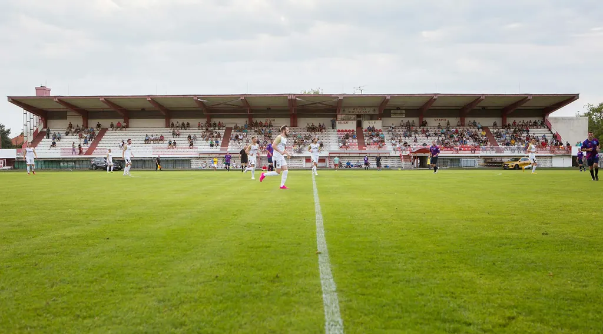
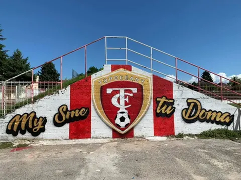

Štadión Vojtecha Schotterta
Dr. P. Adámiho, 955 01 Topoľčany. Domov FC Topoľčany.

- Kapacita
- 5 000 divákov
- Na sedenie
- 295 miest, z toho 50 VIP
- Hracia plocha
- 105 × 68 m
- Adresa
- Dr. P. Adámiho, 955 01 Topoľčany
Navigovať (Google Mapy)Mapy.com
Hlavná hracia plocha
Trávnik 105 × 68 m pred hlavnou tribúnou s 295 miestami na sedenie, z toho 50 VIP.
Umelá tráva
Ihrisko s umelou trávou a vlastnými šatňami. Pri ňom pribudla nová tribúna.
Vedľajšia hracia plocha
Druhá trávnatá plocha v areáli štadióna.
Kapacita, rozmery a poloha: Sportnet. Plochy: zmluva o využívaní štadióna (Centrálny register zmlúv), nová tribúna: web klubu. Štadión patrí mestu, prevádzkujú ho Mestské služby Topoľčany, s.r.o.
Najbližšie zápasy doma

My sme tu doma.
Červeno-biele pruhy, erb a tri slová. Maľba na štadióne hovorí za fanúšikov aj hráčov – tu je domov topoľčianskeho futbalu.
